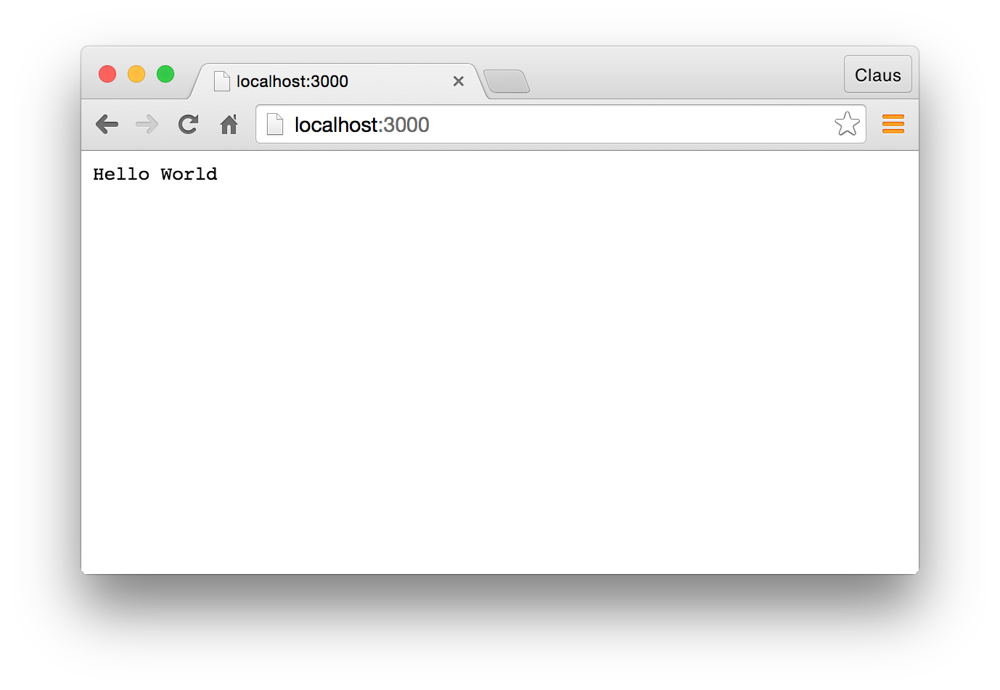
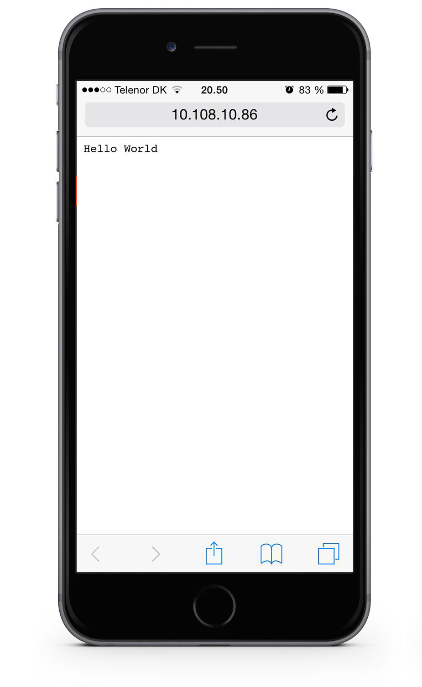

In this forst tutorial you are going to create a webserver with a webpage and deploy it to an online host. So the result will be your first, public accessable Node.js website.
You will be guided through installing Node.js on your computer, creating a webserver on your Node.js installation. This webserver will be accessable to anyone on the local network you are currently on. Then you will create an account at Heroku, a host, where you will be deploying your new website. At the end you will be deploying the website to Azure and you will have your first Node.js public accesable website up and running.
Installing Node.js
First of all you need to download and install Node.js. The Installations is pretty straight forward, but if you need it, guides kan be found here:
To test if your installation went ok, and that you have Node.js on your computer, open the console and type:
node --version
Then you should see something like this:
node --version v0.12.7
The version number could differ in your case. If you do not see this, something went wrong in the installation process, and try to install Node.js again.
Create a local Webserver
Now let´s create our first server. Create a folder and in it a file called server.js, containing the following code.
var http = require('http');
http.createServer(function (req, res) {
res.writeHead(200, {'Content-Type': 'text/plain'});
res.end('Hello World\n');
}).listen(3000);
Start the server from the console by browsing to the folder you just created and type:
node server.js
Now open your browser and type in the url: http://localhost:3000/

If what you made now is indeed a webserver, and not just a document saying “Hello World”, you should be able to access this site from you phone or another computer.
Get the ip-address of you machine (the server) and then make sure that your phone is on the same network as your computer (the server). Type in 10.108.10.86:3000 (this is my ip, you should of cause use yours).

Hopefully you see this, otherwise: “are your devices on the same network” ?
Make your site public to the world
Let´s put your site online and “make it public to the world”.
Microsoft Azure
In order to go online you´ll need to create an account with a host (a server where you buy, or get for free, some space where you can put your sites).
In connection with this elective you will get a 6 month free access pass at Microsoft Azure.
So go ahead and create your account. You will need a Promotion Code which you will get from your teacher.
Then you should browse to this url (www.microsoftazurepass.com) and follow the steps in this tutorial.
So fare so good, you have created an account at Azure!
Before you deploy your site, you will need to create a new file, and make a small change to the server.js file.
Package.json
Now you need to create a file with descriptions about the the application you are building.
In the folder where you have your server.js file, create another file and call it package.json
Put in the following content
{
"name": "tutorial-my-first-webserver",
"version": "0.0.1",
"description": "tutorial used in first class",
"main": "server.js",
"scripts": {
"test": "echo \"Error: no test specified\" && exit 1",
"start": "node server.js"
},
"engines":{"node" : "0.12.x"},
"author": "clbo",
"license": "MIT"
}
Then you need to change a little in your server.js file
In the last line you should replace listen(3000) with
listen(process.env.PORT || 3000)
var http = require('http');
http.createServer(function (req, res) {
res.writeHead(200, {'Content-Type' : 'text/plain'});
res.write('Hello World\n');
res.end();
}).listen(process.env.PORT || 3000);
This is because that Azure dynamically assigns a port number to your application, and this you can get by using process.env.PORT.
Create a Web App at Azure
- Log in to the Azure Portal.
- Click the + NEW icon on the top left of the portal
- Click Web + Mobile, then Web app.
Enter a value for URL. (The unique identity of your site and name in the url)
Select an App Service plan or create a new one. If you create a new plan, select the pricing tier, location, and other options.
Click Create.
Once the status changes to Running, the portal will automatically open the blade for your web app. You can also reach the blade by clicking Browse.
Click Deployment. You may need to scroll to see this part of the blade.
Click Choose Source, then Local Git Repository. Click OK.
Click the deployment credentials part (outlined in red below). Create a user name and password. Click Save. If you have previously enabled publishing for an web app, you don’t need to do this step.
To publish, you will push to a Git remote repository. Find the URL for repository, click All Settings, then click Properties. The URL is listed under “GIT URL”.
https://azure.microsoft.com/da-dk/documentation/articles/web-sites-nodejs-develop-deploy-mac/
Now you have a place to deploy to, now you just need to deploy your site using Git
Deploy your site using Git
In you console make sure you are in the folder with the sever.js and package.json file and the type
git init
This initializes git in your folder.
git add .
This adds server.js and package.json to git.
git commit -m "Initial commit"
Before you can push your files to Azure you will need (the first time) to create a link to the server by writing:
git remote add azure https://username@sitename.scm.azurewebsites.net:443/sitename.git
the url you can get from azure.
Push the files to Azure.
git push azure master
The application is now deployed, and you should be able to access it through http://THENAMEOFYOURSITE.azurewebsites.net/
You can see my version of the site here: http://my-first-webserver.azurewebsites.net/
And find the code used in this tutorial on GitHub